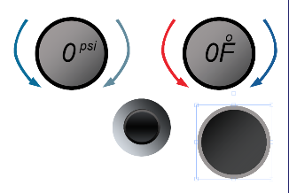
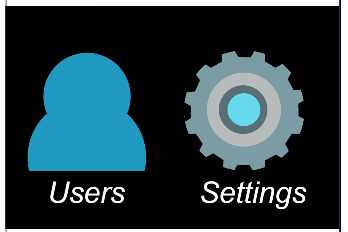
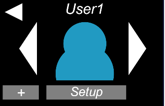
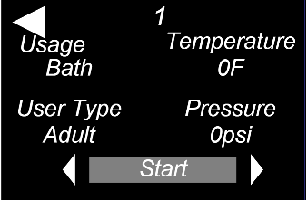
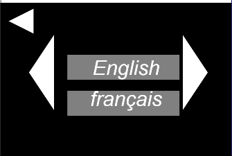
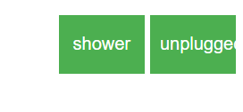

My application is broken up into two different sections. The top part of the application is the screen, which has the settings and user profiles for the application. The bottom part of the application is the control for the bath/shower. With these controls the user can change different settings in the bath tube.
The bottom part of the controls are the main controls for the bath tube. There are two dials that allow the user to control the rate of flow and temperature of the bath. In between those two dials is the diverter which allows a user to switch between the shower head and sprout of the bath tube. To the lower right of the temperature dial is the indicator for the water level. If the user wanted hot water, the only thing got do is tap on the red arrows and that wouldincrease the temperature. Tapping on the blue arrows will decrease the temperature of the water. To increase the flow of the water the user would have tap on the dark blue arrow to the right of the pressure dial. The arrows to the left of the pressure dial is a grey arrow which is used to decrease the flow of water. Tapping on the diverter allows the user to switch between the showerhead and water sprout.
The upper part of the screen is the controls for user settings and profile. The user is inital see a screen with a icon with a user and a gear. The user icon allows them go to the profile manager.The profile manager allows the user to choose the profile that they want to use and update it. The user can also add new profiles for them to use. If the user click on the left or right arrows it will allow them to cycle through the currently available profiles. When the user wants to use a profile they just have to click on the user icon and it will launch them to that profile.
 The profile will show current settings that are made for that choosen profile. It will show temperature, rate of flow, wheather it in bath or shower mode, and if the user is child or adult. On the upper left of the screen there is a back button which takes a user back to the profile chooser. On the button of the profiles is a button to change the settings in each profile. By clicking on this button a user will be able to create custom settings for a profile. In both setup mode and mode that allows them use a settings they have the ability to cycle through different preference settings.
When the user clicks on the gear it will launch the settings menu. The settings menu allows the user to change two parts of the interface of the system. It allows them to change language and the type of unit scale their using to meausre temperature. When the using clicks ont eh type of unit button, it will launch with a menu showing two type of units, celsius or Fahrenheit. The second option in the settings menu allows the a user to change the language. By click on the arrows in the language menu, a user would be able to cycle through 11 different lanuages.
On the outside of the main canvas are some buttons to plug or unplug the bathtube. The second button is to detect if someone on the matt taking a shower or bath.
What makes this a good use interface is that I seperated the more modern interface controls from the physical farmilar controls. When creating my interface I was thinking of ways to keep it sample so that it could be used by anyone. I decided to incorprate elements that a users would be able to identify from other types of bath/showers. While at the same adding elements you see in modern phones. My system is easily usable by both young and old since I didn't go out of language of todays bath/shower rooms. The user would not have to guess what certain buttons do on the interface.
The bottom controls are what you find in your basic bath/shower setup. I believe by keeping physical controls the user is better able to understand what those control do. They would not have to use the touch screen interface to get it to work. This make it great for guess who may use the system once or couple of times. If the user was using preset setting from the profile, they can adjust their current settings with these knob more easily versus going through different menu settings. My controls also give the user feedback on the temperature and rate of flow of the water. There also a water gauge to tell them how much water is in the tub. These controls also adjust according to if the user is standing up or sitting down in the bath. The range of movement would comfortable for the user without the user having stand up or bend over to change sittings.
The upper part of the screen is the profile system that allows the user create and manage their profiles. My system is very simple to use and don't over complex the menu with different elements. The user should be able identify what each element on the menu does without looking at the words. The profile symbol and settings symbol are standard from other type of systems that use them. This allows the user to quickly choose where they are trying to go in the system. Every element in the profile system is logically placed for user quickly choose and select what they want to do. Each button gives the user a response if just perform an action for them.
The interface I created is good because it is simplistic for the user to use. It does not overly complicate things for the user so that they be able to do what they want to do with it.In my interface I kept a degree of familiarness to traditional shower/bath tubs. I believe by keeping this it makes it easier for the user to understand what the interface does. In my design I wanted the user to quickly choose the settings that they want use. I believe in my design I accomplish that.